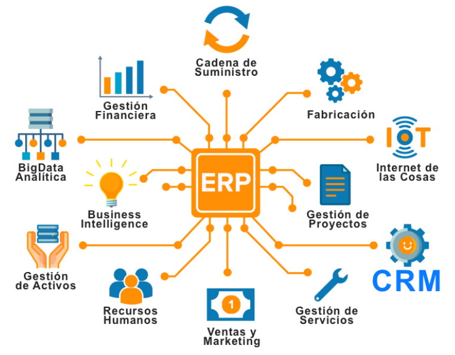

Documentación ERP
A. ¿Qué es un ERP?
Un ERP es un software que usan las empresas para tener todo organizado en un solo lugar: finanzas, ventas, recursos humanos, stock, etc.
A.1. ¿Para qué sirve?
Un ERP mejora la eficiencia de la empresa, reduce errores y permite tomar decisiones estratégicas gracias a la información centralizada y actualizada en tiempo real.

B. ¿Qué funciones realiza?
- Gestión financiera y contabilidad
- Control de inventarios
- Planificación de producción
- Gestión de compras y ventas
- Administración de recursos humanos
- Relaciones con clientes (CRM)
C. Tipos de módulos de un ERP
| Módulo | Función |
|---|---|
| Producción | Control del proceso de fabricación |
| Logística | Gestión de la cadena de suministro |
| Inventario | Gestión de stock y almacén |
| Compras | Gestión de proveedores |
| Ventas | Presupuestos, pedidos, facturas |
| Contabilidad | Movimientos financieros e informes |
| RRHH | Gestión de nóminas y personal |
C.1. Clasificación de módulos
- Producción y operaciones: producción, logística, inventario
- Comerciales: distribución, ventas
- Financieros: contabilidad, facturación
- Compras: gestión de compras y proveedores
C.2. ¿Puedo instalar cualquier módulo?
No todos los módulos pueden instalarse libremente. Depende del ERP, licencias, requisitos técnicos o necesidad de desarrollo personalizado.
D. ¿Qué es la integración de módulos?
La integración permite que los módulos compartan datos automáticamente. Esto reduce errores, mejora la eficiencia y permite tomar decisiones basadas en información precisa y actualizada.
2. Comparativa de ERP
Características y funcionalidades
| ERP | Características | Funcionalidades |
|---|---|---|
| SAP | ERP completo y personalizable | Módulos para finanzas, producción, inventarios, ventas, compras, RRHH, gestión de la cadena de suministro. Integración de todos los procesos de negocio. |
| Microsoft Dynamics NAV | Integración con herramientas Microsoft | Módulos para finanzas, ventas, compras, producción, gestión de inventarios, CRM. Integración con Office 365 y Power BI. |
| Odoo | ERP modular y flexible | Módulos para ventas, compras, inventarios, contabilidad, CRM, e-commerce, marketing, proyectos, entre otros. Versión comunitaria gratuita y opciones de personalización. |
Requisitos de hardware
| ERP | Requisitos |
|---|---|
| SAP | Requiere servidores robustos, preferiblemente con Windows Server o Linux. Capacidad de almacenamiento y procesamiento alta debido a la cantidad de datos que maneja. |
| Microsoft Dynamics NAV | Requiere servidores locales con Windows Server o infraestructura en Microsoft Azure. También necesita una buena conexión a internet para aprovechar la nube. |
| Odoo | Compatible con Linux, Windows y MacOS. Puede instalarse tanto en servidores locales como en la nube (Odoo Cloud). Requisitos bajos a moderados dependiendo del tamaño de la instalación. |
Orientación al mercado
| ERP | Orientación al mercado |
|---|---|
| SAP | Grandes empresas de sectores como manufactura, finanzas, energía, comercio. Ideal para compañías con operaciones complejas. |
| Microsoft Dynamics NAV | Empresas medianas en sectores como comercio minorista, manufactura, distribución y servicios. Ideal para empresas que usan herramientas de Microsoft. |
| Odoo | Pequeñas y medianas empresas (PYMES) en diversos sectores como comercio, servicios, manufactura, tecnología. Flexible y adaptable a cualquier industria. |
Tipos de licencias y precios
| ERP | Licencias | Precios |
|---|---|---|
| SAP | Licencia perpetua o por suscripción | Precios elevados debido a la personalización y soporte. Implementación costosa. |
| Microsoft Dynamics NAV | Licencia por usuario o por suscripción (modelo SaaS) | Precios moderados, pero aún elevados en comparación con otros ERPs. Costos adicionales por módulos y soporte. |
| Odoo | Licencia por suscripción (modelo SaaS) o versión gratuita | Precios accesibles. La versión gratuita tiene funcionalidades limitadas, pero puede ampliarse pagando módulos. |